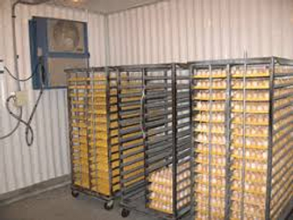

EFFECTS OF EGG STORAGE
The main effects of storing eggs include:-
1. Storage prolongs incubation time. On average, one day’s storage adds one hour to incubation time. This must be taken into account when eggs are set, so fresh and stored eggs should be set at different times.
2. Hatchability is depressed by prolonged storage. The effect increases with storage time after the initial six-day period, resulting in losses of 0.5 to 1.5% per day with the percent increasing as storage extends further.
3. Chick quality will be affected and hence broiler weights can be depressed in chicks from eggs that have been stored for 14 days or more Gas exchange can occur through the pores in the egg shell during storage. Carbon dioxide diffuses out of the egg, and its concentration declines rapidly during the first 12 hours after the egg is laid. Eggs also lose water vapor while in storage. This loss of both carbon dioxide and water contributes to the loss in hatchability and chick quality after storage. Storage conditions must therefore be designed to minimize these losses. Most eggs are placed in open-sided cases or farm racks, but some are placed in solid covered cases. Allow covered eggs to cool down and dry thoroughly before casing to avoid condensation and subsequent mold growth.
Setting eggs
To avoid temperature shock to the embryo and consequent condensation on the shell, eggs should be removed from the egg room and pre-warmed before setting. Ideally, eggs should be pre-warmed in a purpose-built room at around 75-80 °F (24-27 °C) so that all can achieve the desired temperature. Effective air circulation and correct room temperature are essential to achieve the necessary even pre-warming of eggs. Uneven pre-warming increases variation in hatch time - precisely the opposite of the desired effect of pre-warming. Even with good air circulation, it will take 8 hours for eggs on a buggy to reach 78 °F (25 °C), irrespective of their initial temperature. With poor air circulation, it may take twice as long. So the recommendation is to:
- Provide good air circulation around the eggs.
- Allow 6 to 12 hours for pre-warming
SETTING TIME
Three factors influence the total incubation time of eggs:
- a) Temperature of incubation: normally fixed for any hatchery, but to achieve a desired pull time for chicks, variation in the time at which eggs are set can be modified according to age and size of eggs.
- b) Age of the eggs: stored eggs take longer to incubate. You will need to add extra incubation time if eggs are stored over 6 days. (1hour per day of storage) c) Size of the eggs: larger eggs take longer to incubate.
MAJOR CAUSES OF EGGS FAILING TO HATCH
Any investigation of the causes of poor hatchability must include examination of the dead in the shell. The main points to look for are:
- Egg size and shell quality
- Air space
- Position of embryo within shell
- Anatomical abnormalities
- Nutritional abnormalities
- Unused albumen
- Age of embryo